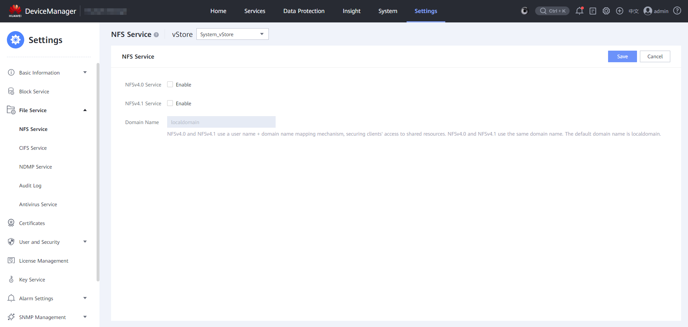

Before performing NAS backup, you must enable the NFSv4.1 service. Otherwise, the backup will fail.
Logging In to DeviceManager
- Choose System > Infrastructure > Cluster Management.
- In the Local Cluster Nodes area of the Backup Cluster tab page, click the node name.
- In the Node detail dialog box that is displayed, click Open the device management platform to go to DeviceManager.
Enabling the NFSv4 Service on DeviceManager
- Choose Settings > File Service > NFS Service.
- In the vStore drop-down box in the upper left, select the vStore for which you want to enable the NFSv4 service.
- Click Modify in the upper right.
The page for configuring the NFS service is displayed.


The screenshot is for reference only and the actual displayed information may vary.
- Enable the NFSv4.1 service.
- Set Domain Name to the name of the storage domain.
- NFSv4.1 uses a username + domain name mapping mechanism, enhancing the security of clients' access to shared resources.
- In a non-domain or LDAP environment, retain the default domain name localdomain.
- In an NIS environment, the entered information must be the same as the domain name in the /etc/idmapd.conf file on the Linux client that accesses the share. (You are advised to set both of them to the NIS domain name.)
- The domain name contains a maximum of 64 characters.
- Click Save.
A Danger dialog box is displayed.

If a host is accessing the shares of the storage system, enabling or disabling the NFS service may interrupt services. Exercise caution when performing this operation.
- Confirm the information in the dialog box and select I have read and understand the consequences associated with performing this operation.
- Click OK.